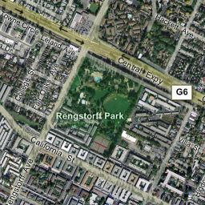
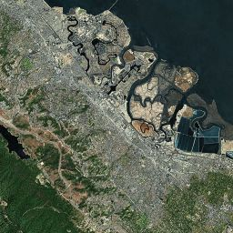
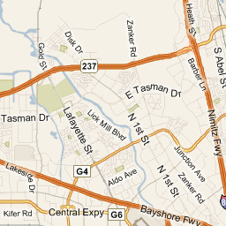
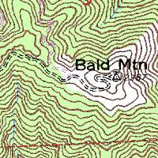
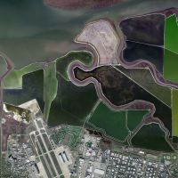
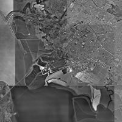

Maps used in Ascent
Ascent displays different types of maps, all of which are downloaded from the internet as needed. Currently, all the maps used in Ascent are provided courtesy of the Microsoft TerraServer and VirtualEarth projects. Each map type is supported at 10-20 zoom levels. VirtualEarth maps are world-wide, while TerraServer is US only.
This is the VirtualEarth "Hybrid" map, which shows satellite photos overlaid with road names and other landmark labels. This is the default map type in Ascent (the default can be changed in Preferences).

The VirtualEarth "Aerial" map is the same as the Hybrid map, except that textual information is not present.

The VirtualEarth "Road" map only shows road data.

The TerraServer "Topo" map only displays a topographic map with contour lines. This map is available for US locations only.

The TerraServer "Urban" map displays color or black and white high-resolution photo data, but is only available for certain metropolitan areas within the US.

The TerraServer "Aerial" map displays color or black and white photo data from throughout the US.

Ascent caches downloaded maps in memory as it runs, and also stores any download maps to ~/Library/Application Support/Ascent/Map Cache/. You can clear the map cache to reclaim disk space by choosing "Clear Map Cache..." from Ascent's File menu.